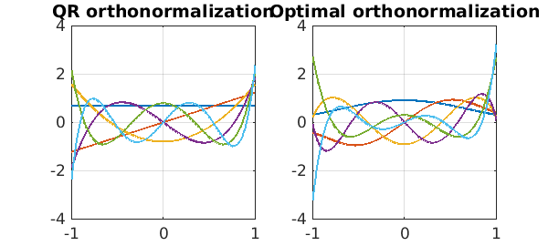
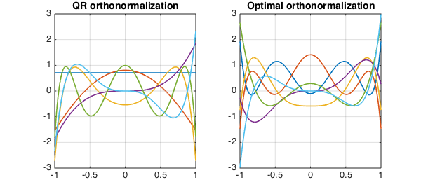
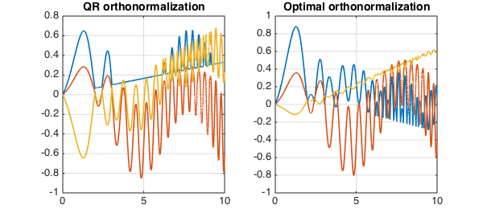

function NearestOrthFun()
Introduction
Suppose $A$ is a given $m \times n$ matrix. The problem of finding the orthonormal matrix $Q$ nearest to $A$ is well-known [4] (by an orthonormal matrix, we mean a matrix with orthonormal columns). Specifically, it is the following problem: $$ Q = \mbox{argmin}_W ||A-W||_\mbox{fro} \quad\mbox{subject to}\quad W^T W = I. $$ This problem is a special case of the orthogonal Procrustes problem [3, p. 327]. There are different ways to find the unique solution to this problem. One way that expresses $Q$ explicitly requires finding a matrix inverse square root [6] as follows:
$$ Q = A(A^T A)^{-1/2}. $$
However, the simplest (and possibly a numerically more stable) way is to compute the singular value decomposition of $A$ and to replace the singular values by ones. In other words, if $A = U S V^T$, then $Q = U V^T$ is the nearest orthonormal matrix to $A$. This is actually the unitary factor in the polar decomposition of $A$ [4].
Our goal is to generalize this situation to the continuous case. Suppose that a set of functions defined on a domain are given. We know how to use Chebfun's qr command to compute orthogonal functions (stored as the columns of a qusimatrix Q2) corresponding to our given functions. See e.g. [2, Ch. 6] for details. Here, we are looking for the nearest set of orthonormal functions. In Chebfun this is also straightforward. We just need to create a quasimatrix out of our given set of functions and use Chebfun's overloaded svd command [1]. The function [Q,Q2] = nearestOrtho(A) in the following computes both Q and Q2.
The first six monomials
A = cheb.gallery('vandermonde'); % A = [1, x, x.^2, x.^3, x.^4, x.^5];
[Q,Q2] = nearestOrtho(A);
Departure from orthogonality in the columns of A = 1.35 Departure from orthogonality in the columns of Q = 2.1e-15 Departure from orthogonality in the columns of Q2 = 1.7e-15 The distance between A and Q2 = 1.92 The distance between A and its closest orthonormal quasimatrix = 1.69

Here, we see Legendre polynomials scaled to have norm 1 (left) and the nearest set of orthonormal functions (right). The first polynomial among these nearest orthonormal polynomials is approximately the following: $ p(x) = 0.9200 - 0.9035 x^2 + 0.3084 x^4$.
Chebyshev-Vandermonde quasimatrix on the interval [0, 1]
A = cheb.gallery('vandercheb');
A = restrict(A,[0,1]);
[Q,Q2] = nearestOrtho(A);
Departure from orthogonality in the columns of A = 1.00 Departure from orthogonality in the columns of Q = 2.8e-15 Departure from orthogonality in the columns of Q2 = 1.7e-15 The distance between A and Q2 = 2.48 The distance between A and its closest orthonormal quasimatrix = 1.62

Mixed algebraic and trigonometric example
x = chebfun('x'); A = [1, cos(x), sin(x.^2), x.^3, x.^4, x.^5];
[Q,Q2] = nearestOrtho(A);
Departure from orthogonality in the columns of A = 2.69 Departure from orthogonality in the columns of Q = 5.1e-15 Departure from orthogonality in the columns of Q2 = 5.7e-15 The distance between A and Q2 = 2.43 The distance between A and its closest orthonormal quasimatrix = 1.95

Non-smooth functions on the interval [0,10]
A = [cheb.gallery('stegosaurus'), cheb.gallery('wiggly'), cheb.gallery('blasius')];
[Q,Q2] = nearestOrtho(A);
Departure from orthogonality in the columns of A = 194.38 Departure from orthogonality in the columns of Q = 1.4e-15 Departure from orthogonality in the columns of Q2 = 3.8e-16 The distance between A and Q2 = 13.63 The distance between A and its closest orthonormal quasimatrix = 13.23

A further comment
We mentioned in the introduction that the nearest orthonormal matrix $Q$ to a given matrix $A$ is the orthonormal factor of a polar deomposition $A = QH$. The other factor $H$ is a Hermitian matrix. Analogously, in the case considered in this Example of functions rather than vectors, we are computing the nearest orthognormal quasimatrix $Q$ to a given quasimatrix $A$, and that could be regarded again as half of a polar decomposition $A = QH$. Here both $A$ and $Q$ are quasimatrices, but $H$ is again a fully discrete matrix. The Chebfun team may introduce at a later date a Chebfun command POLDEC to compute the polar decomposition (analogous to Higham's POLDEC command for matrices in the Matrix Computations Toolbox [5]), in which case, this example could be simplified.
function [Q,Q2] = nearestOrtho(A)
[U,S,V] = svd(A);
Q = U*V'; % nearest quasimatrix to A with orthonormal columns
[Q2,R] = qr(A);
m = size(A,2);
figure;
subplot(1,2,1);
plot(Q2);
v=axis; v(4) = -v(3); axis(v); % make the scales look better
grid on; title('QR orthonormalization')
subplot(1,2,2);
plot(Q); axis(v); grid on; title('Optimal orthonormalization')
fprintf(['Departure from orthogonality in the columns' ...
' of A = %3.2f\n'], norm(A'*A-eye(m)))
fprintf(['Departure from orthogonality in the columns' ...
' of Q = %3.2g\n'], norm(Q'*Q-eye(m)))
fprintf(['Departure from orthogonality in the columns' ...
' of Q2 = %3.2g\n'], norm(Q2'*Q2-eye(m)))
fprintf('The distance between A and Q2 = %3.2f\n', norm(A-Q2,'fro'))
fprintf(['The distance between A and its closest orthonormal' ...
' quasimatrix = %3.2f\n'], norm(A-Q,'fro'))
end
References
-
Z. Battles and L.N. Trefethen, An extension of MATLAB to continuous functions and operators, SIAM J. Scientific Computing 25 (2004) 1743-1770.
-
T.A. Driscoll, N. Hale, and L.N. Trefethen, editors, Chebfun Guide, Pafnuty Publications, Oxford, 2014.
-
G.H. Golub and C.F. Van Loan, Matrix Computations, 4th edition, The Johns Hopkins University Press, 2013.
-
N.J. Higham, Matrix nearness problems and applications, pp. 1-27, in Applications of Matrix Theory, Inst. Math. Appl. Conf. Ser. New Ser., Vol. 22, Oxford Univ. Press, New York, 1989.
-
N.J. Higham, The matrix computation toolbox, http://www.ma.man.ac.uk/~higham/mctoolbox/, 2008.
-
B.K.P. Horn, H.M. Hilden, and S. Negahdaripour, Closed-form solution of absolute orientation using orthonormal matrices, Journal of the Optical Society A, 5 (1988) 1127-1135.
end